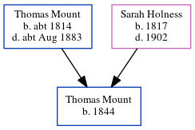

William Rolfe 1821 -
[ Home ] | [ Calendar ] | [ Surnames Index ] | [ Errors ] | [ Family History ]William Rolfe, the husband of Maria Tutt (the three times great-aunt of Nigel Horne), was born in Burmarsh, Kent, England in 18211,2,3 and married Maria (with whom he had 10 children: John, Sarah, Henry, Elizabeth, James, Richard, Maria, William George, Edmund and Susan J, along with 2 surviving children) in Elham, Kent, England around Nov 18444.
During his life, he was living at Cheriton Street, Cheriton, Kent on 30 Mar 18511; and at Horn Street, Cheriton, Kent on 7 Apr 18612, on 2 Apr 18713 and on 3 Apr 18815.
Children
- John was born in 1846
- Sarah was born in 1847
- Henry was born in 1849
- Elizabeth was born in 1852
- James was born on 13 Jan 1853
- Richard was born in 1856
- Edmund was born in 1863
- Susan J was born in 1867
Citations
- 1851 England, Wales & Scotland Census - Findmypast (was age 30 and the head of the household)
- 1861 England, Wales & Scotland Census - Findmypast (was age 40 and the head of the household)
- 1871 England, Wales & Scotland Census - Findmypast (was age 50 and the head of the household)
- England & Wales Marriages 1837-2005 - Findmypast
- 1881 England, Wales & Scotland Census - Findmypast (was age 60 and the head of the household)
Media
1881 England, Wales & Scotland Census Transcription - GBC-1881-0004958462
Family Tree
Map
Generated by ged2site. Last updated on Jul 3, 2024